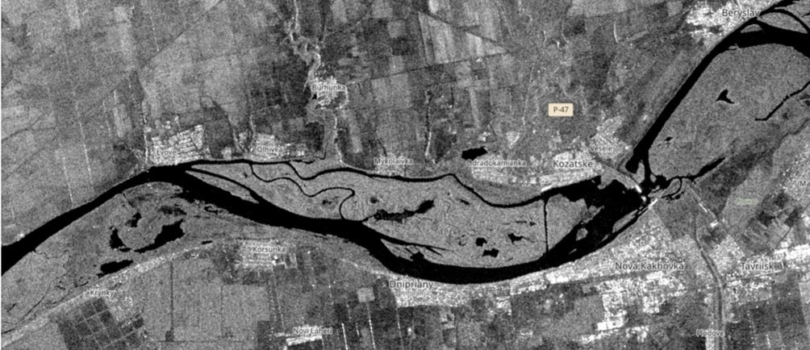

History
Constructed in 1956 on the Dnieper River as part of the hydroelectric plant, the Kakhovka Reservoir covered an area of about 215 km², was up to 70 km long, and up to 8 km wide. It provided electricity generation, irrigation, water supply, and flow regulation, playing a vital role in the regional ecosystem and economy. In 2023, an explosion at the dam caused destruction, flooding of surrounding areas, and severe consequences for both infrastructure and the environment.
SAR images clearly reflect the natural cycle of surface changes throughout the year.
In winter (December–February), ice and snow create a heterogeneous pattern: smooth ice looks dark, while hummocks or snow on the surface appear bright. Dry snow hardly affects the backscatter, while wet snow or meltwater makes the surface darker. In spring (March–May), the water level is at its maximum due to snowmelt and rains — therefore rivers and floodplains on radar images appear dark and widened, while fields and forests look brighter because of the appearance of young vegetation. In summer (June–August), the water level drops, the river channel narrows, and light areas of dry soil and sand appear along the banks. At this time, vegetation reaches its peak, so agricultural fields and forests have the brightest response on SAR images. In autumn (September–November), after the harvest, the fields turn dark, as the signal from the smooth soil surface almost does not return to the satellite. Forested areas also become darker because of leaf fall.
Comparing Before/after the catastrophe
After comparing two SAR images — before and after the destruction of the Kakhovka Hydroelectric Power Plant — significant changes in the water system and surrounding areas are clearly visible. In the “before” image, the water level in the reservoir remained stable: the Dnipro riverbed and water surface appeared as uniform dark areas with distinct shorelines. The coastal zones were narrow, without signs of flooding, and agricultural fields and settlements retained their usual structure and brightness depending on the season. In the “after” image, the situation changed dramatically. In the upper part, where the reservoir previously extended, a sharp shallowing is noticeable: the dark water surface significantly decreased, and in its place appeared large light areas — exposed bottom with sand and silt. Downstream, the opposite effect is observed — large-scale flooding. The river overflowed its banks, and vast areas of fields, riverside villages, and urban quarters turned into dark patches typical of water. Roads and infrastructure partly disappeared under flooded areas, and the structure of farmland changed: the flooded fields lost their characteristic texture and appear uniformly dark.
Now
What is there now, conclusion of what SAR allowed us to detect (results of research and our hypotheses)
Now in its place we observe a completely different picture:
SAR animation over a six-month period after the dam breach
SAR animation over a six-month period after the dam breach